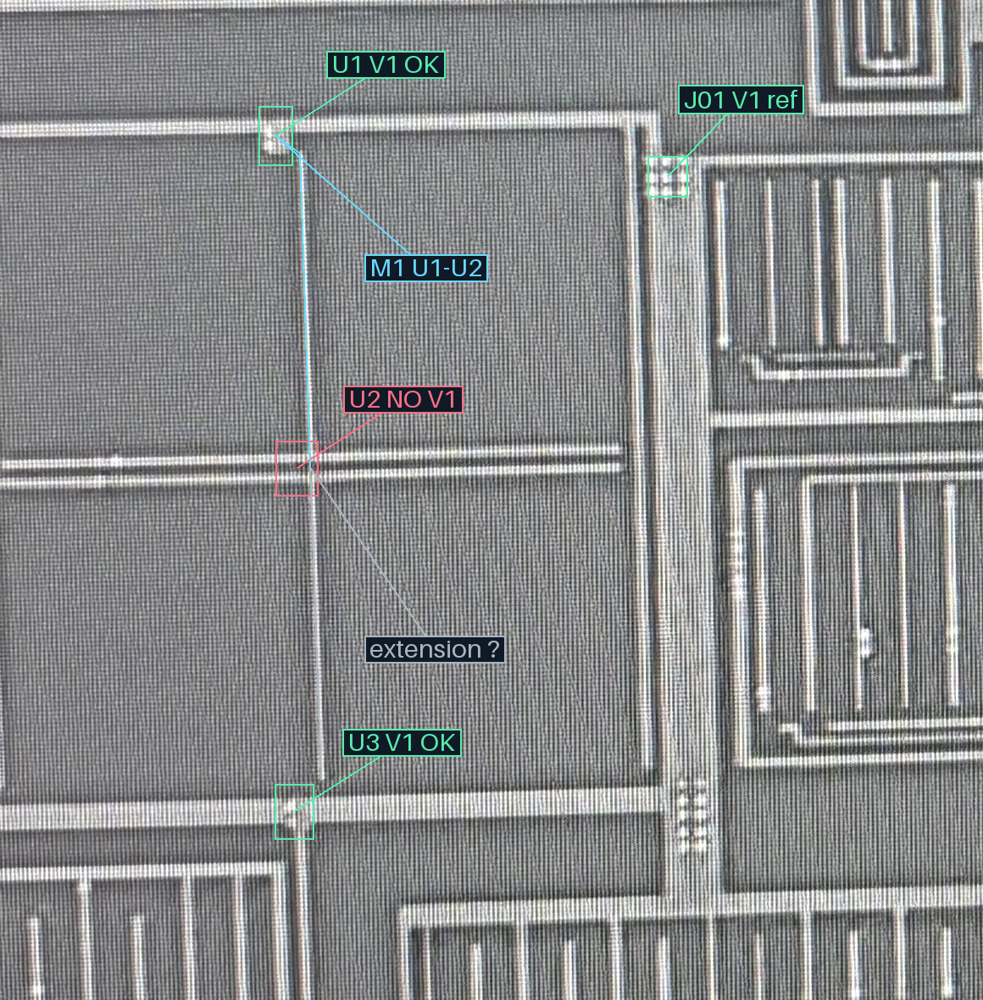
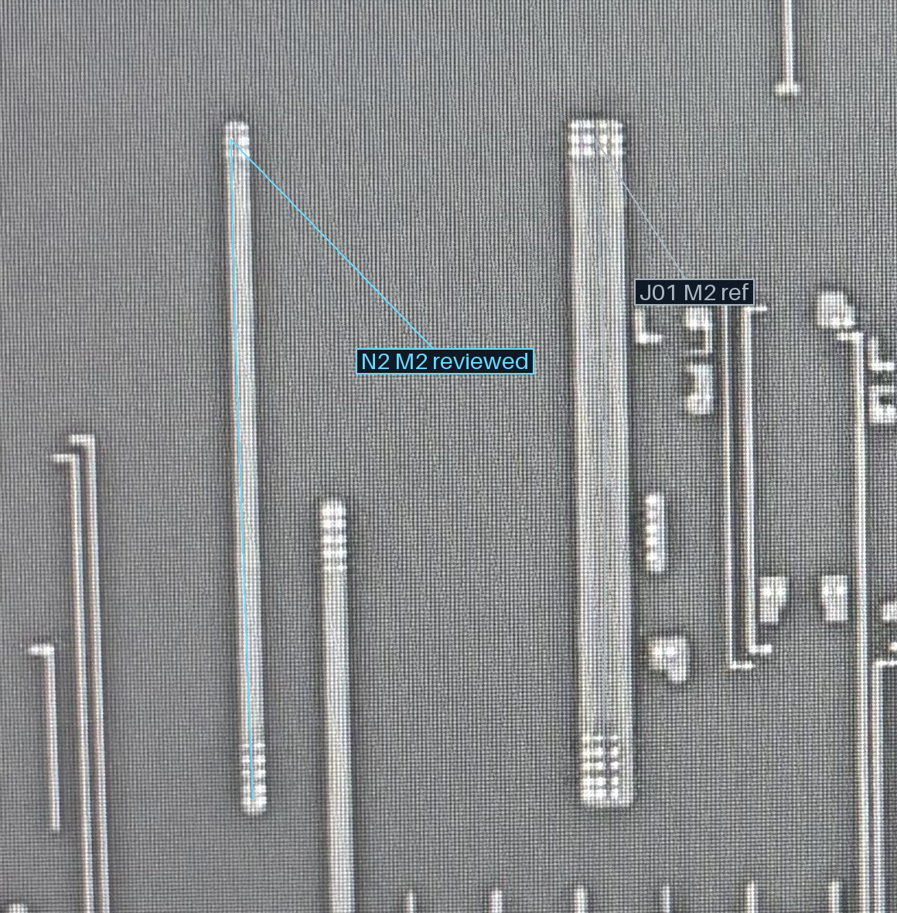

2026-10-23 · 用户裁决原文 · 已审身份与同层关系
| 位置 | 本处V1 | M1归属 | M2承载 |
|---|---|---|---|
| U1 | 有，已审 | 与U2同一条M1 | 待局部对应核对 |
| U2 | 无，已审 | 与U1同一条M1 | 本处不生成V1接口 |
| U3 | 有，已审 | 与U1/U2的关系仍未知 | 待局部对应核对 |
蓝线是U1—U2同一M1的原图参考路径；灰线是U2以下向下延伸的AI观察。细竖段似乎在U3宽横带上方收口，中间可见暗间隙，因此暂不把它并到U3。精确边界、终端和全局网络均未由这张标线确认。
我的判断：U1、U3两处V1均接蓝色N2窄M2。这项目前是候选。若你从两层结构能确认，可直接回复“两处均接N2”，或指出例外。人工明确的连接身份单独记录；精确落点、投影和几何边界不会随之批准。
M1 · 打开完整宽图

M2 · 打开完整宽图

B1—M2—L1原13路径保持已审；本轮新增跨层关系0，共同导体注册表与材料不修改。
AI接续观察与未决条件 · 评价边界 · 核验 · 事前观察页